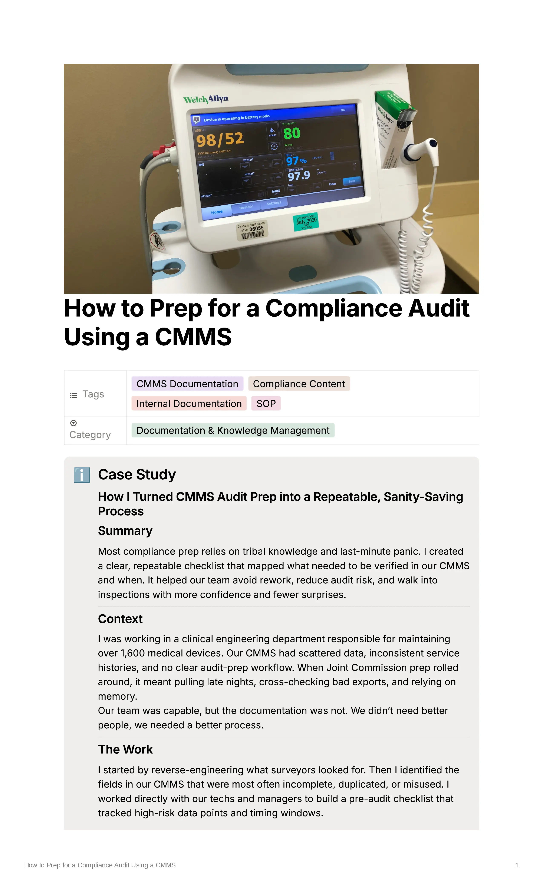

Healthcare Technology · Technical Documentation · Compliance
How to Prep for a Compliance Audit Using a CMMS
A repeatable audit-prep workflow for a clinical engineering team responsible for more than 1,600 medical devices.
The problem
Audit preparation relied heavily on tribal knowledge, manual cross-checking, inconsistent service records, and last-minute cleanup. The team needed a process that made it easier to identify missing or inaccurate CMMS data before an inspection.
The audience
Clinical engineering technicians, managers, and staff responsible for preventive maintenance records, asset data, recalls, and audit readiness.
What I did
I reverse-engineered the information surveyors were likely to request and identified the CMMS fields most often incomplete, duplicated, or misused.
I worked with technicians and managers to turn those findings into a plain-language pre-audit checklist that could be used inside the team's existing workflow.
The solution
The guide created a repeatable sequence for reviewing:
- Preventive maintenance status
- Equipment location and status
- Documentation completeness
- Recall and alert records
- CMMS naming and duplicate records
- Outstanding issues and escalation needs
The finished documentation
The final guide turns audit preparation into a repeatable process, with checks for preventive maintenance records, equipment status, documentation, recalls, and CMMS data quality.

The result
After the checklist was introduced, audit preparation was reduced by two to three days. Problems were identified earlier, and leadership began using the guide to train new technicians and standardize expectations.
Skills demonstrated
- Technical writing
- Process documentation
- Healthcare technology
- CMMS
- Compliance documentation
- Information design
- User-focused writing